| 対象者 | 東日本支社 工事統括部 現場代理人・品質管理担当者 |
| 利用端末 | 社用PC（社内ネットワークに接続した状態） |
| 接続先 | https://develop.d9ngenggxas1k.amplifyapp.com/ |
| 問い合わせ先 | Ele-Knowledge サポート b_ele-knowledge-support@meltec.co.jp |
| バージョン・発行日 | 第1版（2026年9月9日） |
EleKnowledge（画面表記: EleKnowledge、サポート名: Ele-Knowledge）は、昇降機の技術資料（据付基準、C資料、TI、現場代理人業務マニュアルなど）を検索し、参考資料（根拠）つきで質問に回答する社内向けのチャット型検索システムです。
回答は AI が資料をもとに要約したものです。現場判断は必ず「参考資料」の原本（PDF）で確認してください。回答の先頭に「※機種未指定のため…」と表示された場合は、特定機種の事実として断定しないでください。
| 項目 | 内容 |
|---|---|
| 接続先 URL | https://develop.d9ngenggxas1k.amplifyapp.com/ |
| 利用端末・ネットワーク | 社用PC。社内ネットワークからのみ接続できます（接続元の制限あり）。社外ネットワークからは画面が表示されません。 |
| ブラウザ | Microsoft Edge など、社用PCの標準ブラウザ。 |
| アカウント | 自分でサインアップ（アカウント作成）すると利用できます。登録できるメールアドレスは @meltec.co.jp または @○○.mitsubishielectric.co.jp の会社アドレスのみです。 |
| ログインの有効期間 | ログインから24時間。経過後は再度ログインが必要です。 |
| 問い合わせ先 | Ele-Knowledge サポート b_ele-knowledge-support@meltec.co.jp |
主に次の画面を使います。
| 画面 | 用途 | 本書の章 |
|---|---|---|
| ログイン | メールアドレスとパスワードでログインする。アカウント作成・パスワードリセットへの入口。 | 3章 |
| アカウント作成 | 初回のみ。名前・メールアドレス・パスワードを登録する。 | 2章 |
| メールアドレスの確認 | 初回のみ。メールで届いた6桁の確認コードを入力する。 | 2章 |
| ホーム | ログイン後の最初の画面。質問の入力、RAGチャットへの入口、使い方ガイド、運営からのお知らせ。 | 4章 |
| RAGチャット | 質問と回答のやり取り。絞り込み、参考資料の確認、評価、履歴。 | 5〜9章 |
初めて使うときに一度だけ行います。会社のメールアドレスとパスワードを登録し、メールで届く確認コードを入力すると利用を開始できます。
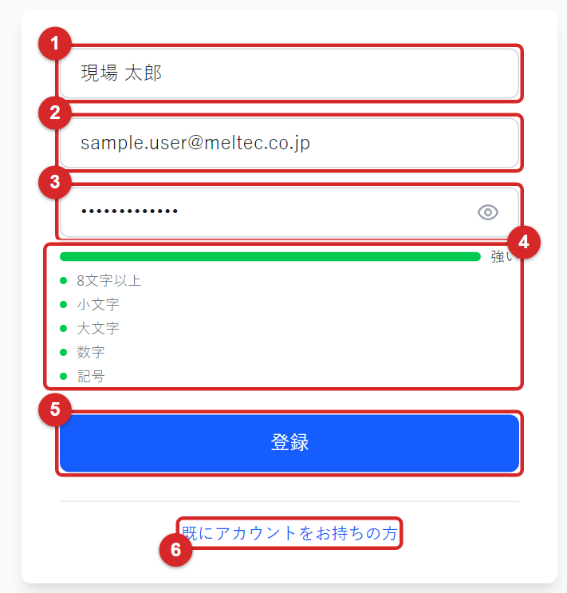
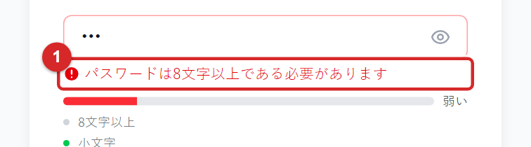
no-reply@verificationemail.com、件名 Your verification code のメールを開きます。本文の Your confirmation code is の後ろにある6桁の数字が確認コードです。
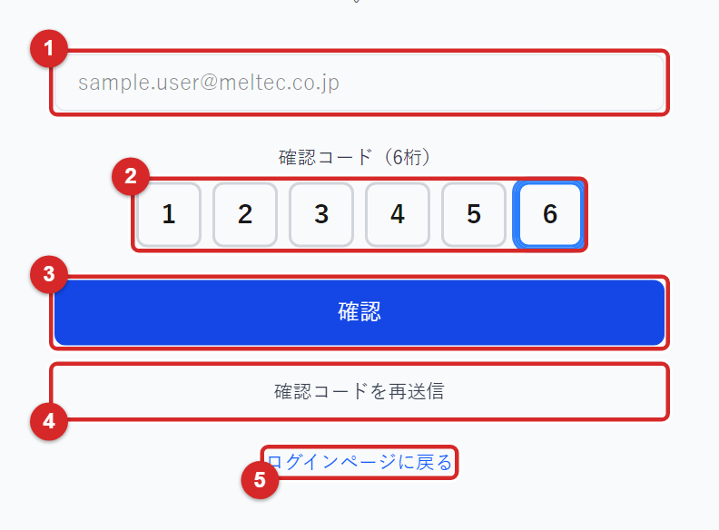
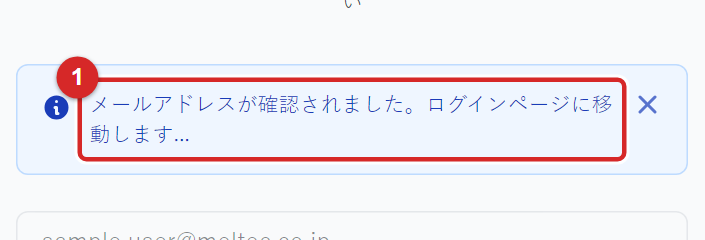
| 表示・状況 | 対処 |
|---|---|
| 「このメールアドレスは既に登録されています。」 | すでにアカウントがあります。ログイン画面からログインしてください。パスワードが分からない場合は 3.4「パスワードを忘れたとき」へ。 |
| 「登録に失敗しました。もう一度お試しください。」 | 会社のメールアドレス以外（@meltec.co.jp／@〜.mitsubishielectric.co.jp 以外）は登録できません。アドレスを確認して再度登録してください。それでも失敗する場合はサポートへ連絡してください。 |
| 「確認コードが正しくありません。」 | 最新のメールのコードを入力し直してください。再送信した場合は、最後に届いたメールのコードが有効です。 |
| 「確認コードの有効期限が切れています。…」 | 確認コードを再送信 を押し、新しいコードを入力してください。 |
| 確認画面を閉じてしまった | ログイン画面でメールアドレスとパスワードを入力してログインすると、確認画面に自動で移動します。 |
前提: 2章でアカウント作成とメールアドレスの確認が済んでいること。
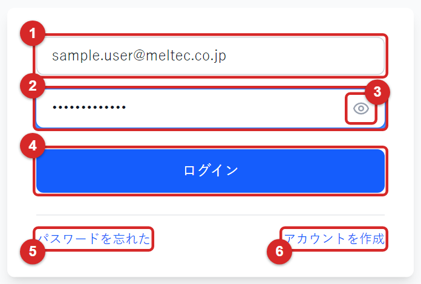
ログインから24時間はブラウザを閉じても再ログインなしで利用できます。24時間を過ぎると自動的にログイン画面に戻るので、再度ログインしてください。
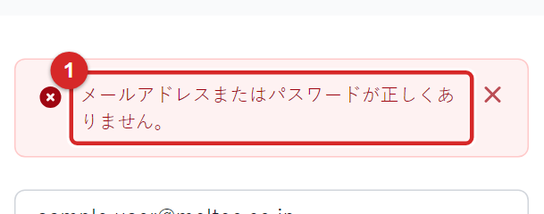
| 表示・状況 | 対処 |
|---|---|
| 「メールアドレスまたはパスワードが正しくありません。」 | 入力内容を確認して再入力してください。何度も失敗すると一時的にログインできなくなるので、数分〜15分ほど待ってから再度お試しください。パスワードが分からない場合は 3.4 へ。 |
| 「メールアドレスの確認が必要です。…」と出て確認画面に移動した | アカウント作成時の確認コード入力が済んでいません。2.3 の手順で確認コードを入力してください。 |
| 「ログイン試行が多すぎます。後でもう一度お試しください。」 | しばらく時間をおいてから再度お試しください。 |
| 「ネットワーク接続エラーです。…」／画面自体が表示されない | 社内ネットワークに接続しているか確認してください。社外からは利用できません。 |
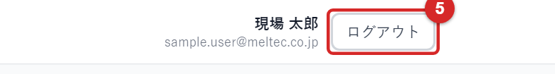
前提: 登録したメールアドレスでメールを受信できること。
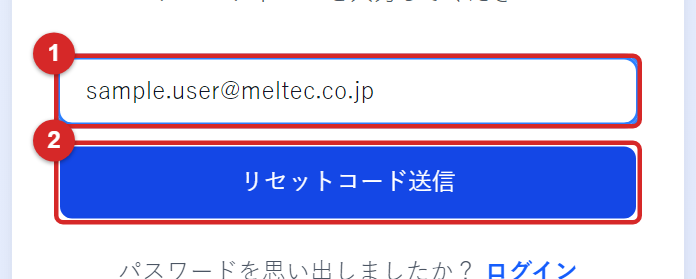
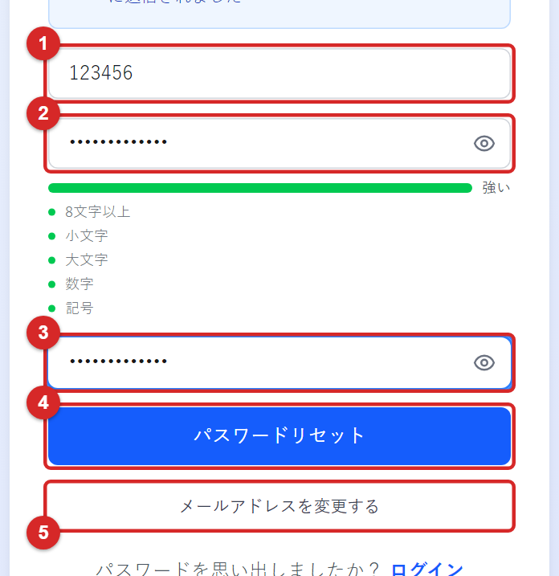
| 表示・状況 | 対処 |
|---|---|
| 「このメールアドレスで登録されたアカウントが見つかりません。」 | アドレスを確認してください。未登録の場合は 2章 の手順でアカウントを作成します。 |
| 「メールアドレスが確認されていないため、パスワードをリセットできません。」 | アカウント作成時の確認コード入力が済んでいません。サポートへ連絡してください。 |
| 「リセットコードが正しくありません。」／「…有効期限が切れています。」 | 最新のメールのコードを入力してください。期限切れの場合は メールアドレスを変更する でステップ1に戻り、もう一度コードを送信します。 |
| 「試行回数が多すぎます。…」 | しばらく時間をおいてから再度お試しください。 |
ログインすると最初に表示される画面です。ここから RAGチャットに進みます。
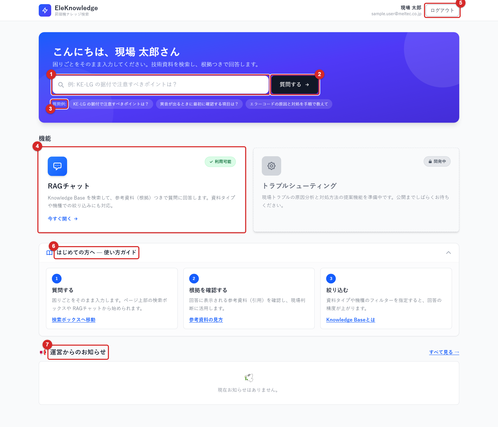
| 番号 | 名称 | 説明 |
|---|---|---|
| 1 | 質問の入力欄 | ここに質問を入力して 2 を押すと、入力した文をそのまま RAGチャットの入力欄に引き継いで開きます（RAGチャット側で 送信 を押すと送信されます）。 |
| 2 | 質問する | RAGチャット画面を開きます。入力欄が空でも開けます。 |
| 3 | 質問例 | 押すと、その質問文を引き継いで RAGチャットを開きます。 |
| 4 | RAGチャット（機能カード） | 「利用可能」の機能です。カード内の 今すぐ開く または カード全体を押すと RAGチャットが開きます。隣の「トラブルシューティング」は開発中で、現在は利用できません。 |
| 5 | ログアウト | ログアウトしてログイン画面に戻ります（3.3）。 |
| 6 | はじめての方へ — 使い方ガイド | 3ステップの簡単な説明です。見出しを押すと開閉でき、状態は次回以降も記憶されます。「参考資料の見方」「Knowledge Baseとは」を押すと補足説明が小窓で開きます。 |
| 7 | 運営からのお知らせ | メンテナンス予定や更新情報が表示されます。項目を押すと本文が開き、すべて見る → で一覧画面に移動します。お知らせがないときは「現在お知らせはありません。」と表示されます。 |
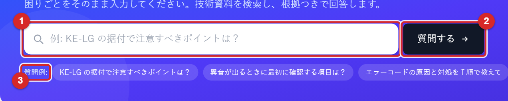
前提: ログイン済みでホーム画面が表示されていること。
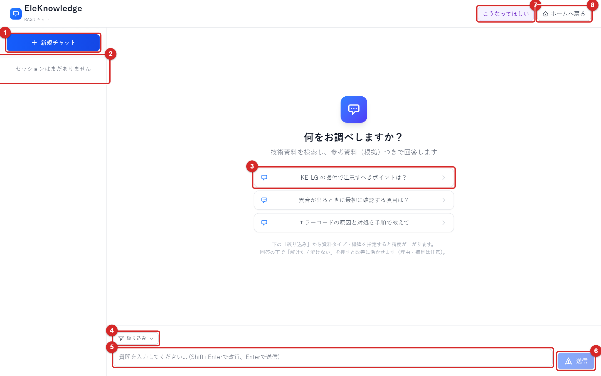
| 番号 | 名称 | 説明 |
|---|---|---|
| 1 | 新規チャット | 新しいチャット（セッション）を始めます。表示中の会話は履歴に残ります。 |
| 2 | 履歴欄 | 過去のチャットの一覧です（9章）。 |
| 3 | 質問例 | 押すと入力欄にその文が入ります。そのまま送信するか、書き換えてから送信します。 |
| 4 | 絞り込み | 資料の種類・機種で検索対象を絞り込みます（6章）。 |
| 5 | 質問の入力欄 | 質問を入力します。Enter で送信、Shift+Enter で改行です。 |
| 6 | 送信 | 質問を送ります。入力欄が空のときは押せません。 |
| 7 | こうなってほしい | 使い方や表示についての要望を運用チームに送ります（8.3）。 |
| 8 | ホームへ戻る | ホーム画面に戻ります。 |
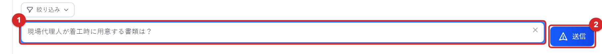
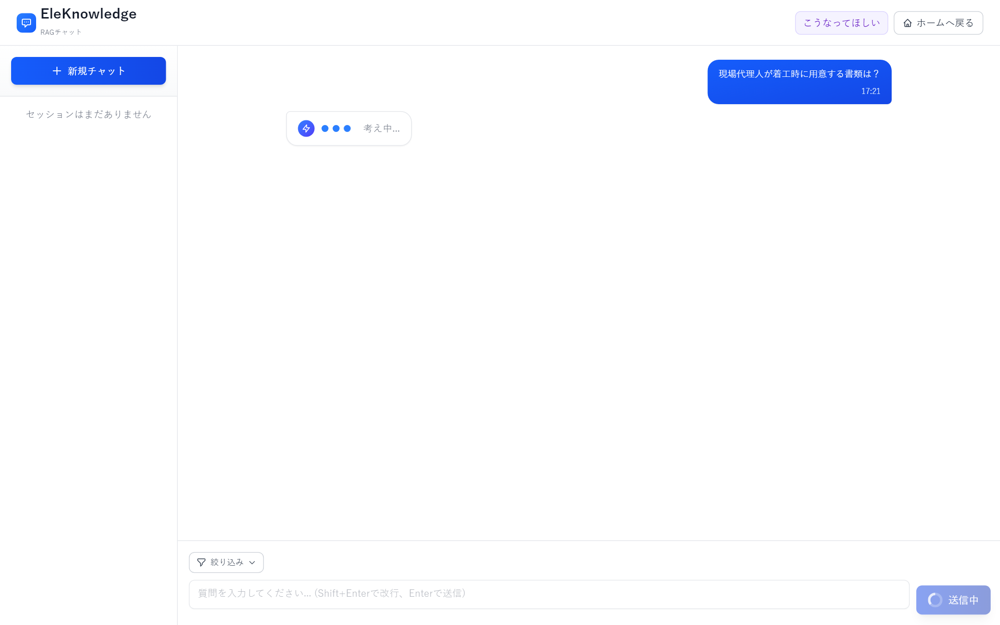
「異音がする」「動かない」のような症状だけの質問で、機種・部位・状況が書かれていない場合、回答の代わりに「追加で教えてください」が表示されることがあります。
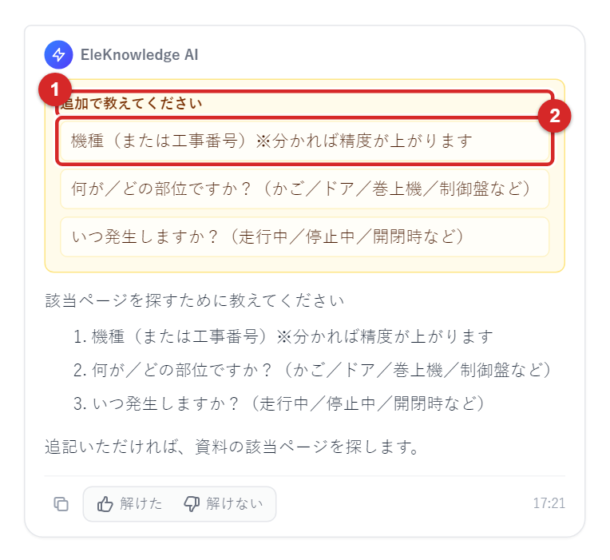
検索の結果が弱いときは、見当違いの回答をしないよう、断定した回答をせずに「参考候補（低信頼）」と注意文が表示されます。
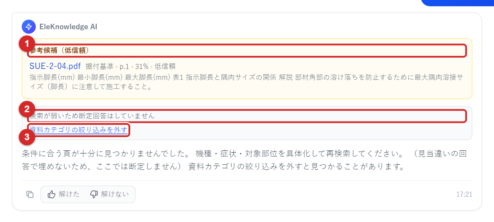
| 表示・状況 | 対処 |
|---|---|
| 入力欄の下に赤い帯で「エラーが発生しました: …」 | 右端の × で閉じ、少し待ってからもう一度送信してください。送った質問は画面に残っています。繰り返し発生する場合は、表示されたメッセージを添えてサポートへ連絡してください。 |
| 「セッション取得に失敗しました: …」 | 履歴の読み込みに失敗しています。ページを再読み込み（F5）してください。改善しない場合はサポートへ。 |
| 送信ボタンが押せない | 入力欄が空か、前の質問の回答待ち（「送信中」）です。回答が表示されるまで待ってください。 |
| ログイン画面に戻ってしまう | ログインの有効期間（24時間）が切れています。再度ログインしてください。 |
| 「考え中...」のまま長時間変わらない | 1分程度待っても変わらない場合は、ページを再読み込みし、履歴からそのチャットを開いて回答の有無を確認してください。回答がなければ再度質問を送ってください。 |
回答の先頭に「※機種未指定のため、一般資料・取扱機種スコープ内の候補を含みます。特定機種の事実としては断定しないでください。」と表示されます。特定機種について確認したいときは、機種を選んで質問してください。
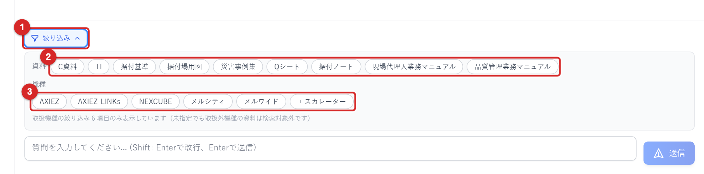
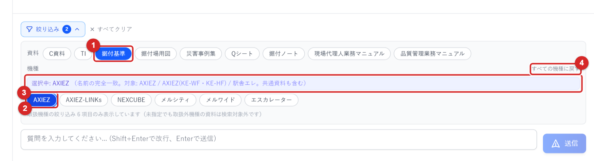
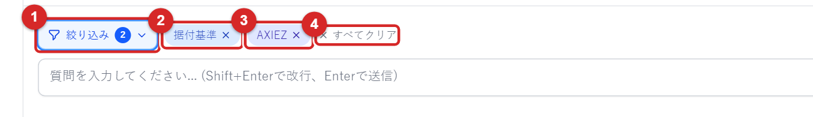
| 状況 | 対処 |
|---|---|
| 目的の機種が一覧にない | この画面で選べる機種は、担当部門の取扱機種6項目のみです。一覧にない機種の資料は検索対象外です。必要な場合はサポートへ相談してください。 |
| 絞り込むと「条件に合う頁が十分に見つかりませんでした」になる | 資料の種類の絞り込みを外して再度質問してください（5.4）。 |
| 新規チャットを押したら絞り込みが残っている | 絞り込みはチャットを切り替えても残ります。不要なら「すべてクリア」で解除してください。 |
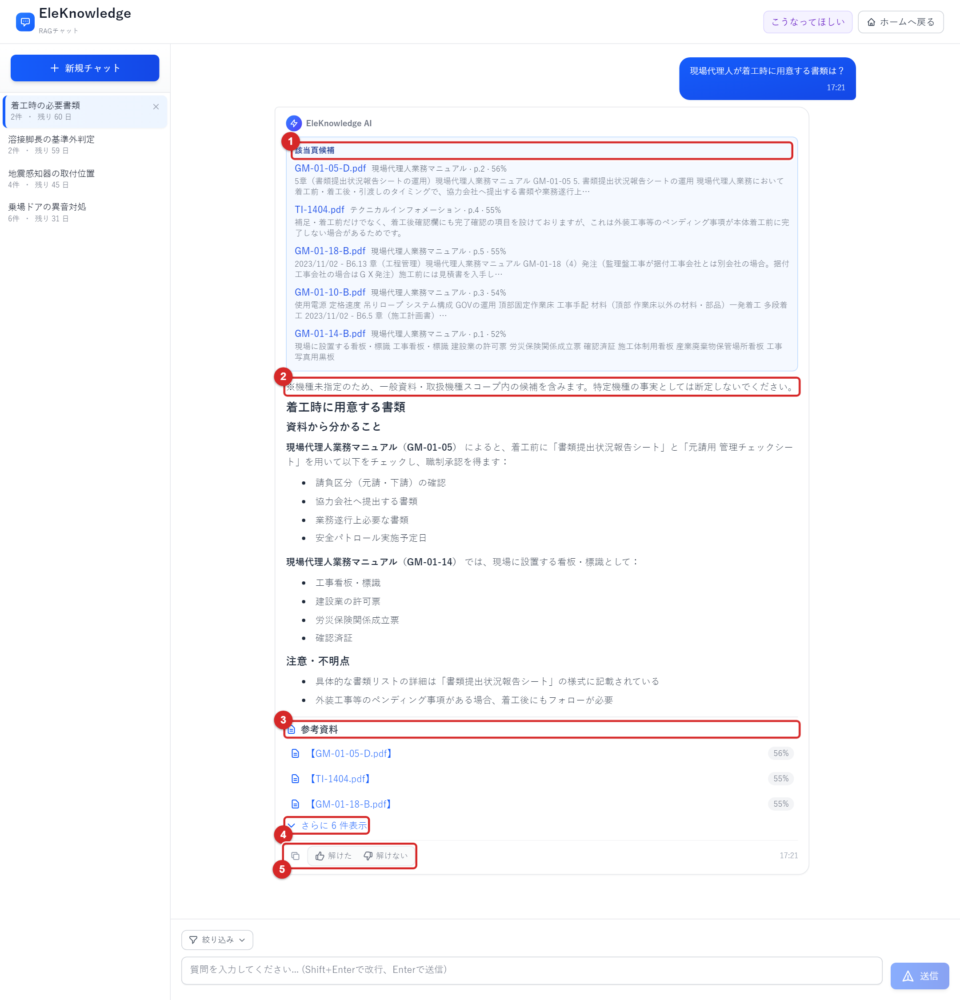
| 番号 | 名称 | 説明 |
|---|---|---|
| 1 | 該当頁候補 | 回答のもとになった資料のページの候補です（最大5件）。資料名・種類・ページ番号・関連度（%）・本文の抜粋が並びます。資料名を押すと、そのページを開いた状態で PDF が別タブに表示されます（7.3）。 |
| 2 | 注意書き | 機種を指定せずに質問したときに表示されます（6.1）。 |
| — | 回答本文 | 資料の内容を「資料から分かること」「注意・不明点」などに整理した要約です。 |
| 3 | 参考資料 | 回答が参照した資料の一覧です。関連度の高い順に上位3件が表示されます。資料名を押すと PDF が別タブで開きます。 |
| 4 | さらに N 件表示 | 4件目以降の参考資料を表示します。折りたたむ で元に戻ります。 |
| 5 | 操作ボタン | 左から、回答のコピー、解けた、解けない（8章）。右端は回答時刻です。 |
%は質問と資料の内容がどれくらい近いかの目安です。数値が高いほど関連が強い可能性がありますが、正しさを保証するものではありません。必ず原本で確認してください。
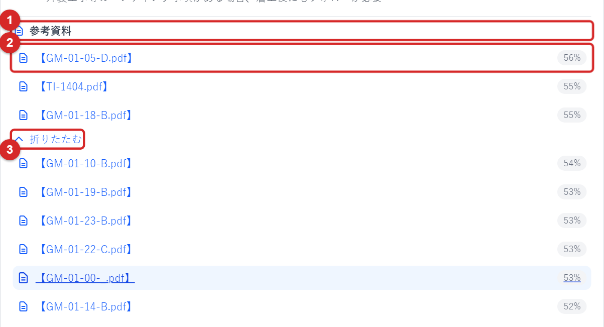
前提: ログイン中であること（資料はログインした利用者しか開けません）。
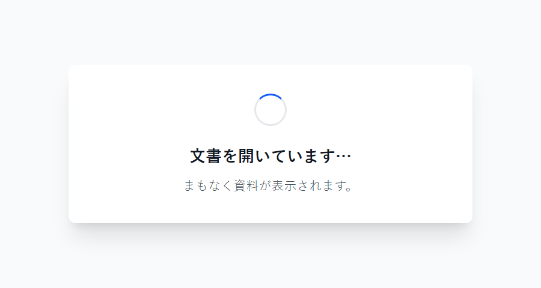
| 表示・状況 | 対処 |
|---|---|
| 「ログイン画面に移動します…」と出てログイン画面が開いた | ログインの有効期間が切れています。ログインすると、開こうとした資料に自動で戻ります。 |
| 「文書を開けませんでした」 | チャットに戻る を押して戻り、もう一度資料名を押してください。繰り返し発生する場合は資料名を添えてサポートへ連絡してください。 |
| 新しいタブが開かない | ブラウザのポップアップブロックを確認してください。アドレスバー右端の表示から許可できます。 |
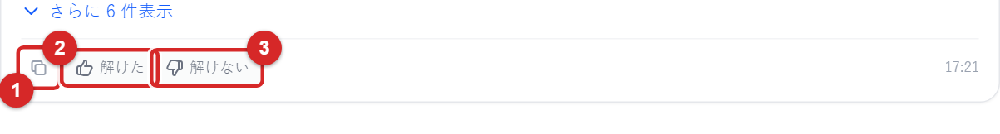
評価は任意ですが、送っていただくと検索精度や資料の整備に活かされます。評価はチャットごとに記録され、後から変更できます。
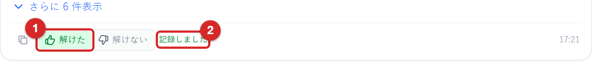
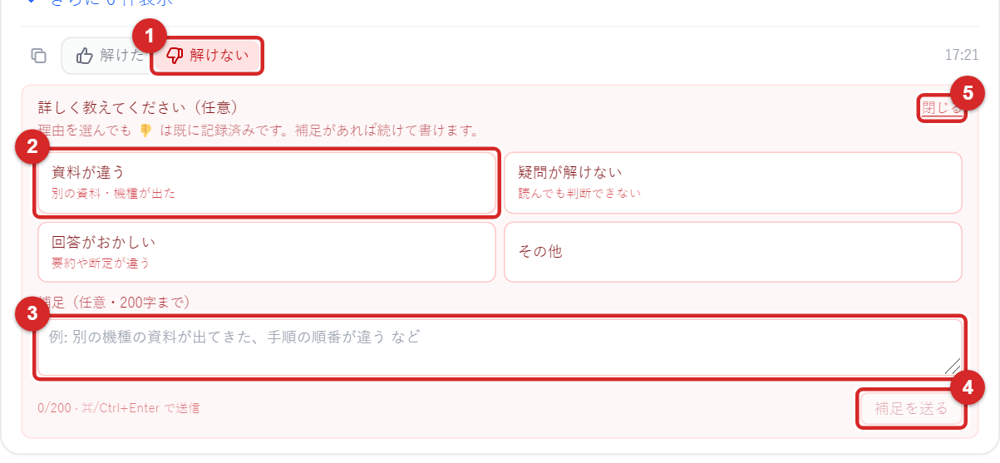
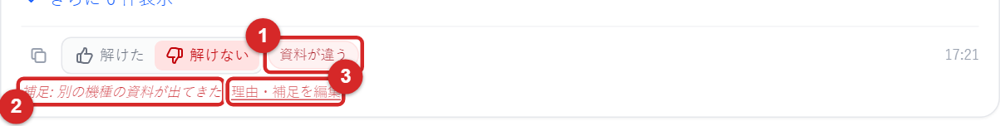
もう一方のボタン（解けた／解けない）を押すと評価が置き換わります。「解けた」に変えると、理由・補足は消えます。
| 表示・状況 | 対処 |
|---|---|
| 「評価の送信に失敗しました。もう一度お試しください。」 | 少し待ってからもう一度ボタンを押してください。改善しない場合はサポートへ。 |
| ボタンを押しても反応しない | 回答本文の表示が終わるまで待ってください。直前の評価を送信中の間も押せません。 |
回答の評価とは別に、「候補資料をもっと上に出してほしい」のような要望を運用チームに送れます。
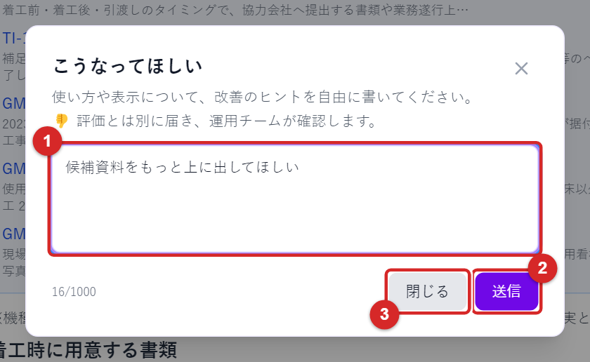
RAGチャット画面の左側に、自分の過去のチャットが新しい順に並びます。他の利用者の履歴は表示されません。
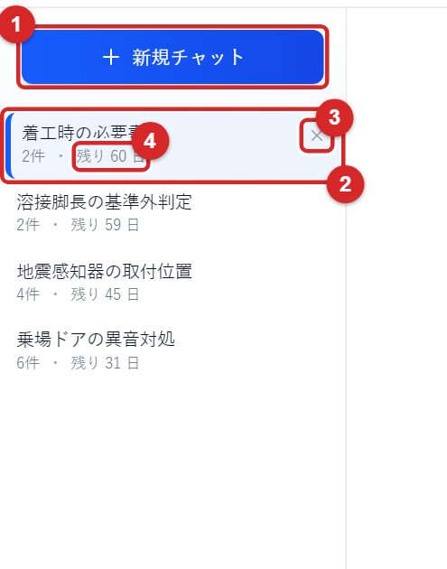
| 表示・状況 | 対処 |
|---|---|
| 「メッセージ取得に失敗しました」 | もう一度項目を押してください。改善しない場合はページを再読み込みしてください。 |
| 「セッション削除に失敗しました」 | 少し待ってから再度お試しください。 |
| 「指定されたセッションを開けませんでした」 | リンクなどから開いたチャットが存在しないか、自分のものではありません。履歴欄から開き直してください。 |
| 履歴欄に「読み込み中...」のまま表示されない | ページを再読み込みしてください。 |
| 症状 | まず試すこと | それでも直らないとき |
|---|---|---|
| URL を開いても画面が表示されない／接続できない | 社内ネットワークに接続した社用PCか確認し、ブラウザを再起動して開き直す。 | サポートへ連絡（接続元の制限の可能性）。 |
| アカウントを作れない（登録に失敗） | 会社のメールアドレスか、パスワード条件を満たすか確認（2章）。 | サポートへ連絡（メールアドレスを添える）。 |
| 確認コード／リセットコードのメールが届かない | 「社外メール」「迷惑メール」フォルダーを確認。再送信を押す。 | サポートへ連絡。 |
| ログインできない | 3.2 の表を確認。パスワードが不明ならリセット（3.4）。 | サポートへ連絡。 |
| 質問を送ってもエラーになる | × で閉じて再送信。ページを再読み込み。 | エラーの文言と質問文を添えてサポートへ。 |
| 回答が的外れ／資料が違う | 機種・部位・状況を具体的に書き直す。絞り込みを見直す（6章）。解けない と理由を送る（8.2）。 | 「こうなってほしい」で要望を送る（8.3）。 |
| 資料（PDF）が開けない | チャットに戻って資料名を押し直す（URL は約5分で無効）。 | 資料名を添えてサポートへ。 |
| 履歴が消えた | 60日を過ぎた履歴は自動削除されます（9.1）。 | — |
| 「トラブルシューティング」を使いたい | 現在は開発中で利用できません。 | 公開時期はお知らせを確認。 |
メール: b_ele-knowledge-support@meltec.co.jp
問い合わせの際は、次の内容を書いていただくと調査が早く進みます。
※ パスワードは絶対に書かないでください。サポートがパスワードを尋ねることもありません。
| メッセージ | 表示場所 | 意味・対処 |
|---|---|---|
| ありがとうございます。評価を記録しました。 | チャット | 「解けた」が記録されました。 |
| 理由を記録しました。補足があれば続けて書けます。 | チャット | 「解けない」の理由が記録されました。 |
| 補足を記録しました。 | チャット | 補足が記録されました。 |
| 要望を送信しました。ありがとうございます。 | チャット | 「こうなってほしい」の要望が送られました。 |
| 評価の送信に失敗しました。もう一度お試しください。 | チャット | 時間をおいて再度押してください。 |
| エラーが発生しました: … | チャット（赤い帯） | 質問の送信に失敗しました。再送信してください。 |
| 該当ページを探すために教えてください | 回答 | 聞き返しです。機種・部位・状況を追記して送ってください（5.3）。 |
| 条件に合う頁が十分に見つかりませんでした。… | 回答 | 質問を具体化するか、絞り込みを外して再質問（5.4）。 |
| ※機種未指定のため、一般資料・取扱機種スコープ内の候補を含みます。… | 回答の先頭 | 機種を選ばずに質問したときの注意書き（6.1）。 |
| このセッションを削除しますか？ | 履歴 | OK で削除、キャンセルで中止（9.4）。 |
| 文書を開いています… ／ ログイン画面に移動します… | 資料を開く時 | そのまま待ちます。後者はログイン後に資料へ戻ります（7.3）。 |
| メールアドレスが確認されました。… | 確認画面 | アカウント作成が完了しました（2.3）。 |
| パスワードリセットコードがメールアドレスに送信されました | リセット画面 | メールのコードを入力します（3.4）。 |
| 用語 | 意味 |
|---|---|
| RAGチャット | 資料を検索し、その内容をもとに回答を作る方式（RAG: 検索拡張生成）のチャット画面。 |
| Knowledge Base | 回答の根拠となる技術資料の集まり。運用側が資料を登録・管理しています。 |
| セッション（チャット） | 1つの話題の質問と回答のまとまり。履歴欄の1項目に対応します。 |
| 該当頁候補 | 回答のもとになった資料ページの候補。資料名を押すとそのページを開けます。 |
| 参考資料 | 回答が参照した資料の一覧。関連度（%）付き。 |
| C資料／TI／据付基準／据付場用図／災害事例集／Qシート／据付ノート／現場代理人業務マニュアル／品質管理業務マニュアル | 絞り込みで選べる資料の種類。 |
| 取扱機種 | この画面で検索対象になっている機種（AXIEZ／AXIEZ-LINKs／NEXCUBE／メルシティ／メルワイド／エスカレーター）。 |
本書の内容は 2026年9月9日時点の画面に基づきます。画面の更新により表示が変わる場合があります。最新の情報はホーム画面の「運営からのお知らせ」を確認してください。